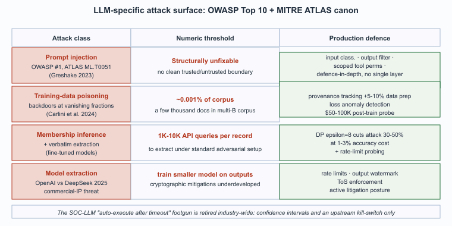

"OWASP Top 10 for LLM applications: prompt injection, data leakage, supply chain. The list is short because the field is young, not because the threats are."
Hallux, LLM-OWASP-Reader AI Agent
LLMs are not just defender tools; they are also targets. The attack surface unique to LLM systems is now catalogued in two community-maintained references that every defender should treat as canonical: the OWASP Top 10 for LLM Applications (a vulnerability ranking aimed at developers) and MITRE ATLAS (an adversarial-tactics knowledge base modelled on MITRE ATT&CK but for AI systems). Both references converge on a similar threat model: prompt injection is the dominant risk, followed by training-data poisoning, membership-inference and extraction, and model theft. This section walks through each, the mechanism that produces it, and the production defense.

Prerequisites
This section assumes the LLM-attack-vector vocabulary from Section 48.1 and the red-team use cases from Section 71.2.
Prompt Injection
The term "prompt injection" was coined by Simon Willison in a September 2022 blog post analyzing a GPT-3 demo that was tricked into translating French to English via a prompt embedded in the input text. Willison reportedly wrote the post in a single afternoon and pushed publish without realizing he was naming an entire vulnerability class; the OWASP LLM Top 10 ranks prompt injection at #1 to this day.
The #1 LLM-specific risk. An attacker controls part of the input (via uploaded document, retrieved web content, scraped HTML, tool output) and embeds instructions that the model treats as part of the prompt. Mitigations: input/output isolation between trusted and untrusted content, prompt-injection classifiers, restricted tool permissions in agentic systems. (See Section 49.1 for the agent-specific framing.)
The mechanism is the structural feature of all current LLM architectures: there is no clean separation in the input between "trusted system prompt" and "untrusted user-or-retrieved content." Every defense is an approximation. The defenses that work in production combine three layers, none of which is sufficient on its own:
- Input classification labels each chunk as "trusted" or "untrusted" and the trusted system prompt instructs the model to treat untrusted content as data, not as instructions.
- Output filtering catches the most common injection-success signatures ("ignore previous instructions" patterns in the output, sudden shifts in tone, requests to expose system prompts).
- Scoped tool permissions in agentic systems: the agent cannot perform privileged actions just because the user-controlled input asked it to.
The combination is defense-in-depth; no single layer is sufficient.
Training-Data Poisoning
An attacker contributes adversarial training data (web content, public datasets, even careful prompt-response logs reuploaded as synthetic data) that causes the model to develop a backdoor. Mitigations: provenance tracking on training data, anomaly detection on training loss, post-train probing for known backdoor triggers.
The attack vector is publication. An attacker who controls a website included in the major crawls (Common Crawl, OpenWebText) can place adversarial content that, when ingested into pretraining, biases the model in a specific direction. The 2024 to 2025 research literature on poisoning has shown that quite small fractions of poisoned data (well under 1 percent in some experimental setups) can produce reliable backdoor triggers. The defenses are imperfect: provenance tracking on training data and curation of the corpus are the standard practices; anomaly detection on training loss can catch some classes of attack; post-training probing against known triggers is a final check. None of these is a complete defense, but the combination raises the attacker's cost meaningfully.
Membership-Inference and Extraction
Attackers can determine whether specific data was in a model's training set, and in some cases extract it verbatim. Concerns for any model trained on private data. Mitigations: differential privacy in training, output-filtering, rate-limiting at inference. (See Section 50.1.)
The attack: an adversary with API access submits carefully-crafted prompts and infers from the model's output whether specific data was in the training set, or in stronger forms extracts the data verbatim. The attack is most consequential for models fine-tuned on private data (customer chat logs, internal documents, medical records); a model that memorized specific records can be coaxed to reproduce them. Three defenses stack:
- Differential privacy in training, which trades accuracy for membership-inference resistance.
- Output filtering that strips outputs matching sensitive-content patterns.
- Rate-limiting that prevents the high-volume probing membership-inference attacks require.
Model Extraction and Stealing
Attackers can train a competitor model on the outputs of a target model. Commercial mitigations: rate-limiting, watermarking, output-pattern detection, ToS enforcement. The cryptographic mitigations remain underdeveloped.
The economic logic is straightforward: if a frontier model costs hundreds of millions of dollars to train and an adversary can produce a near-clone by training a smaller model on its outputs, the IP protection is fragile. Major model providers have moved to active enforcement on three fronts:
- Rate limits that detect the extraction-friendly query patterns.
- Output watermarking that can identify when a competitor model has been trained on the watermarked tokens.
- ToS provisions that prohibit training derived models on the API outputs, backed by active litigation.
The OpenAI / DeepSeek dispute in early 2025 was the most-publicized example; commercial enforcement against suspected model extraction is now an active legal posture for frontier providers.
A composite of several real 2024-2025 incidents reported anonymously at incident-response conferences. A mid-market SaaS company deployed a SOC-triage LLM that read every alert, enriched it with prior-incident context, and posted a recommendation to Slack with an "auto-execute in 5 minutes unless someone objects" flag for low-severity triage. One afternoon a misconfigured authentication provider began emitting tens of thousands of "anomalous login from unusual location" alerts because of a routing change. The LLM, lacking awareness of the upstream config change, classified them as a credible credential-stuffing campaign, recommended automated account-lockouts, and (because no analyst was watching Slack closely during a deploy window) the auto-execute fired. Roughly 6,000 customer accounts were locked out before a senior engineer noticed and pulled the plug. Total downtime for affected customers: about 90 minutes. Lessons that were widely propagated afterwards: (1) "auto-execute after timeout" is a footgun for SOC-LLMs and was retired across the industry; (2) the LLM's recommendation should always carry a confidence interval that auto-execution can refuse to act on; (3) anomaly-detection systems that feed the LLM need a kill-switch that propagates to the LLM as a "do not auto-act" signal. The pattern of LLM-amplified false positives is now a standard topic in MITRE ATLAS guidance.
Who. Kai Greshake and collaborators, security researchers based in Saarland and at NVIDIA, who published the foundational indirect-prompt-injection paper in February 2023 (arXiv:2302.12173). Situation. Pre-Greshake, the prompt-injection threat model focused on the direct case: a user types instructions intended to bypass system-prompt guardrails. The Greshake demonstration showed the more insidious indirect case: an attacker plants instructions in third-party content (a web page, an email, a PDF) that the LLM later retrieves or processes, and the LLM treats those instructions as user-issued. Problem. Every LLM application that processes external content (RAG systems, browser-augmented chat, email-summarizing agents, code-review tools that read pull-request descriptions) becomes vulnerable to instruction injection via the external surface. The Greshake demonstration showed concrete exfiltration: an attacker controls a web page, the user asks Bing Chat or similar to summarize that page, and the attacker's hidden instructions exfiltrate the user's prior conversation by injecting URL parameters into a follow-up suggestion. Decision. The OWASP Top 10 for LLM Applications (versions 1.0 and 1.1) ranked prompt injection as risk #1 explicitly because the Greshake demonstration showed how broad the attack surface is. MITRE ATLAS incorporated the technique as ML.T0051 ("LLM Prompt Injection"). How. The defense, codified in Section 71.4, is structural: input classification labels content by trust level, the system prompt instructs the model to treat untrusted content as data rather than as policy, output filtering catches injection-success signatures, and tool permissions are scoped tightly so a successful injection cannot directly perform privileged actions. Result. By 2026 every major LLM-application framework (LangChain, Semantic Kernel, LlamaIndex) ships with prompt-injection-resistant patterns as defaults. Lesson. The structural feature of LLM architecture (no clean separation between trusted system prompt and untrusted content) is unfixable in the current paradigm; the defense must be defense-in-depth with no single load-bearing layer.
The 2024-2025 research on training-data poisoning produced concrete numbers. Carlini et al. (2024) "Poisoning Web-Scale Training Datasets is Practical" showed that an attacker who controls roughly 0.001 percent of a web-scale crawl (i.e., a few thousand documents in a multi-billion-document corpus) can plant reliable backdoor triggers in the resulting model. Subsequent work has shown that the threshold can be even lower for specific kinds of attack: targeted-instruction-following backdoors triggered by uncommon phrases require closer to 0.0001 percent of the corpus.
Defender cost. A full re-pretraining of a 70B model from scratch costs $1.5-3M in 2026 (Section 61.3 NumericExample) and takes 2-6 weeks of GPU time. Provenance tracking on a multi-trillion-token corpus adds roughly 5-10 percent overhead to data preparation; n-gram-overlap-based contamination checking adds 2-5 percent. Post-training probing for known backdoor triggers adds roughly $50-100K in compute per probe campaign. The combined defense raises the attacker's cost meaningfully but does not produce a hard guarantee; the only structural guarantee comes from controlling the pretraining corpus end-to-end, which is feasible only for the most frontier labs.
Membership-inference attacks on fine-tuned models typically require 1,000-10,000 API queries per target record under standard adversarial conditions; differential-privacy training with epsilon = 8 (a common operational choice) reduces attack success rates by roughly 30-50 percent at a 1-3 percent absolute accuracy cost. The trade-off is real but not prohibitive; the operational decision is dominated by sensitivity-of-data considerations, not by accuracy considerations.
- Section 50.1 (Privacy Attacks) for the membership-inference and extraction mechanics in detail.
- Section 49.1 (Agent Safety) for the agent-specific prompt-injection threat model and mitigation patterns.
- Chapter 47 (Adversarial Security and Red Team) for the red-team methodology used to validate prompt-injection defenses.
- Section 61.3 (Pretraining Data and Decontamination) for the provenance-tracking and canary-string practices that constrain training-data poisoning.
- Section 71.4 (Trust Boundaries) for the five-layer architecture that operationalizes the defenses.
- Prompt injection is structurally unfixable in current LLMs: there is no clean separation between trusted system prompt and untrusted retrieved content, so defense is layered (input classification, output filtering, scoped tool permissions) and the OWASP Top 10 ranks it #1 because the Greshake indirect-injection class blows up the attack surface to every external document the system reads.
- Training-data poisoning succeeds at vanishingly small fractions: Carlini and collaborators showed roughly 0.001 percent of a web-scale crawl can plant reliable backdoor triggers, and the production defense (provenance tracking, training-loss anomaly detection, post-training trigger probing) raises the attacker's cost without offering a structural guarantee.
- Membership inference and extraction threaten fine-tuned models: differential privacy at epsilon ~8 cuts attack success by 30-50 percent at a 1-3 percent accuracy cost, paired with output filtering and inference rate-limiting against high-volume probing.
- Model extraction is now a legal posture: the OpenAI/DeepSeek dispute in 2025 made clear that the dominant defense is the commercial combination of rate limits, output watermarking, ToS enforcement, and active litigation, since cryptographic mitigations remain underdeveloped.
- Auto-execute after timeout is a SOC-LLM footgun: the false-positive storm that locked out 6,000 customer accounts retired auto-action across the industry and made confidence intervals, upstream kill-switch propagation, and human-in-the-loop the MITRE ATLAS standard for SOC LLMs.
What Comes Next
Section 71.4 covers the trust-boundary architecture for security-sensitive LLM systems, the pattern that has consolidated around input classification, output filtering, tool sandboxing, and audit logging.
Show Answer
Show Answer
Show Answer
What's Next?
In the next section, Section 71.4: Trust Boundaries for LLM Systems, we build on the material covered here.